2．一阶常微分方程
像微积分在17世纪后期与18世纪前期的著作一样，常微分方程最早的著作出现在数学家们彼此的通信中（其中有许多已失传了），或者出现在那些常常重登书信中建立的或说明的结果的刊物中。某人宣布一个结果往往引起另一个人的申辩，说他更早做了完全相同的工作。由于存在着激烈的竞争，这种申辩不一定是真实的。有些证明只有概述，而且弄不清作者掌握的详情；同样，在信上写着的一般解法也仅仅是特例的说明。由于这些理由，我们即使不考虑整个严密性的问题，也很难指出谁是首先得到这些结果的人。
惠更斯在1693年的《教师学报》(1)中明确说到了微分方程，而莱布尼茨在同年的《教师学报》的另一篇文章中称微分方程为特征三角形的边的函数(2)。我们通常首先学到的关于常微分方程的观点，即由给定的函数及其导数中消去任意常数后得到微分方程，大约直到1740年才出现，并且是由方丹提出来的。
詹姆斯·伯努利是用微积分求常微分方程问题分析解的先驱者之一。在1690年5月(3)，他发表了他关于等时问题的解答，虽然莱布尼茨已经给出了这问题的一个分析解。这个问题是：求一条曲线，使得一个摆沿着它作一次完全的振动，都取相等的时间，不管摆所经历的弧长的大小。这微分方程，用詹姆斯·伯努利的记号写出，就是
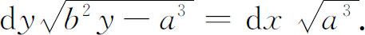
詹姆斯·伯努利由微分等式得出结论：两端的积分（这个词第一次被使用）必须相等，并且给出了解答
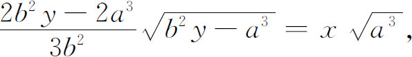
这曲线自然是摆线。
詹姆斯·伯努利在1690年的同一篇文章中提出了一个问题：一根柔软而不能伸长的弦自由悬挂于两固定点，求这弦所形成的曲线。莱布尼茨称此曲线为悬链线。这个问题早在15世纪，达·芬奇（Leonardo da Vinci）已经考虑过。伽利略猜想这条曲线是抛物线。惠更斯证实，这是不对的，并且主要用物理的推论证明：如果弦的重量以及加在弦上的总载荷按水平方向计算是均匀的，那么曲线是抛物线。而对于实在的悬链线，则沿曲线方向的重量是均匀的。
在1691年6月的《学报》中，莱布尼茨、惠更斯和约翰·伯努利都发表了各自的解答。惠更斯的解答是几何的，而且是不清楚的。约翰·伯努利(4)用微积分的方法给出一个解答。在他的1691年的微积分教本中有完整的阐述，这就是现代在微积分与力学中所采用的那个讲法，它建立在微分方程
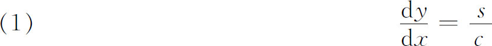
的基础上，其中s是由B到任意点A（图21.1）之间的弧长，而c依赖于弦在单位长度内的重量。从这个微分方程推导出我们现在写成
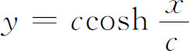
的解。莱布尼茨用微积分的方法也得到这个结果。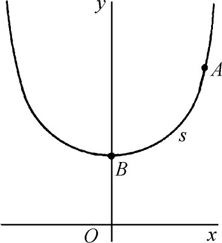
图21.1
约翰·伯努利能够解决悬链线问题，而他的哥哥詹姆斯·伯努利提出这个难题却不能解决，所以他感到莫大的骄傲。他在1718年9月29日给蒙莫（Pierre Rémond de Montmort，1678—1719）的一封信中夸耀自己(5)：
我的哥哥的努力没有成功；至于我，比较幸运，因为我找到了彻底解决问题的技巧（我说这一点是毫不夸张的，为什么我要隐瞒真情呢？）并且把它转化为抛物线的求长法。千真万确的是，我为了钻研这个问题牺牲了通宵的休息。在那些日子里，对于我当时轻轻的年纪和业务而言，这是够呛的。但是，第二天早晨我满怀喜悦，跑到我哥哥那里。他深居不出，为了解开这个戈尔丹的绳结（Gordian knot）仍在苦苦地奋斗呢。像伽利略一样，他老是想象悬链线是一根抛物线。我对他说，停止！停止！再不要折腾你自己去证明悬链线与抛物线的等同性了，因为那是完全错误的。抛物线对悬链线的构造的确有用，但是这两种曲线是如此的不同：一个是代数的，另一个是超越的……然而，你使我不胜惊讶，说我的哥哥曾找到了解决这个问题的方法……我问你，难道你真的会想象，如果我的哥哥已经解决了这个疑难的问题，他对我会这样谦虚，一如他不是一个解决者，而让我与惠更斯和莱布尼茨一道独享首创者的光荣吗？
在1691年与1692年间，詹姆斯·伯努利与约翰·伯努利还解决了悬挂着的变密度非弹性软绳、等厚度的弹性绳，以及在每一点上的作用力都指向一固定中心的细绳所成形状的问题。约翰·伯努利还解决了逆问题：已知一悬挂着的非弹性细绳所成形状的曲线方程，求绳子密度相对于弧长的变化规律。在力学的教科书中，通常见到的就是约翰·伯努利的解答。詹姆斯·伯努利在1691年的《学报》中发表了一个证明：一根给定的绳子悬挂在两固定点，它能取的所有形状中，以悬链线的重心为最低。
在1691年的《学报》中，詹姆斯·伯努利推导出跟踪曲线的方程，在图21.2的曲线中，对于曲线上任一点P，PT/OT是常数。詹姆斯·伯努利首先推出
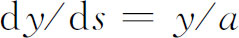
，这里s是弧长。从这个方程他推得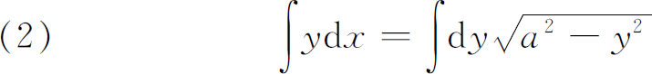
与
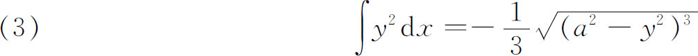
作为曲线的特征积分。方程（2）可以积分成
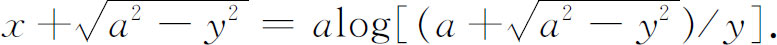
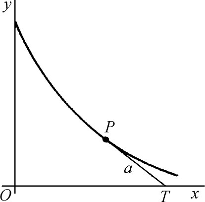
图21.2
莱布尼茨想到了常微分方程的变量分离法，并且于1691年函告惠更斯。这样他就解决了形如
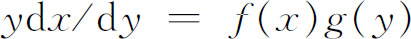
的方程，只要把它写成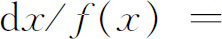
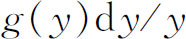
，就能在两边进行积分。他并没有建立一般的方法。他（1691）还把一阶齐次方程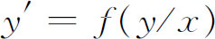
化成积分。他令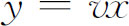
，并代入方程，就使变量可以分离。所有这些概念——变量分离与齐次方程的求解，约翰·伯努利在1694年的《教师学报》中作了更加完整的说明。其后，莱布尼茨在1694年证明如何把线性一阶常微分方程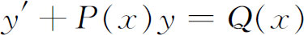
化成积分。他的方法使用了应变量的变换。一般说来，莱布尼茨只解了一阶的常微分方程。詹姆斯·伯努利后来在1695年的《学报》中(6)提出了求解现在叫做伯努利方程
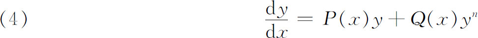
的问题。莱布尼茨在1696年证明(7)：利用变量替换
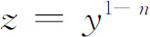
，可以把方程化成线性方程（y和y′的一次方程）。约翰·伯努利给出了另一种解法。詹姆斯·伯努利在1696年的《学报》中本质上用变量分离法把它解出。莱布尼茨和约翰·伯努利在1694年引进了找等交曲线或曲线族的问题，即找一曲线或曲线族使得与一已知曲线族相交于给定的角度。约翰·伯努利称等交曲线为轨线，并且在惠更斯的光学工作基础上指出，因为光线与光的波前是正交的，所以等交轨线的问题在求光线通过非均匀介质时的路径是重要的。这个问题一直到1697年都没有公开，那时约翰·伯努利把它作为向詹姆斯·伯努利提出的一个挑战。詹姆斯·伯努利只解决了一些特殊的实例。约翰·伯努利导出了一特殊曲线族的正交轨线的微分方程，并且在1698年(8)解出了它。后来莱布尼茨找到一曲线族的正交轨线：考虑
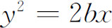
，其中b是曲线族参数（他引进的一个名词）。从这个方程推出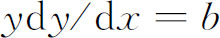
。莱布尼茨再令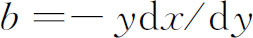
，代入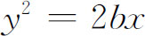
，就得到轨线的微分方程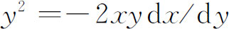
，它的解为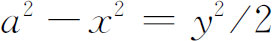
。虽然他只解出了一些特例，但他却料想到一般的问题与解法。正交轨线的问题一直处于沉寂状态，直到1715年，莱布尼茨向英国数学家主要对准牛顿提出挑战：找出求一已知曲线族的正交轨线的一般方法。牛顿在造币厂，白天劳累之后，用睡觉前的时间解出了这个问题，他的解答发表在1716年的《哲学汇刊》上(9)。牛顿还指明了如何求与一已知曲线族相交成定角的曲线，或相交的角是按照给定的规律随族中曲线变化的曲线。虽然牛顿用了二阶常微分方程，但他的方法与现代所用方法没有太大的不同。
关于这个问题的更进一步的工作是由尼古拉·伯努利（1695—1726）在1716年完成的。詹姆斯·伯努利的学生赫尔曼（1678—1733）在1717年的《学报》中给出了一个规则：若
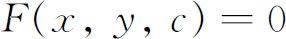
是一已知曲线族，则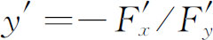
，其中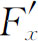
与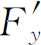
为F的偏微商，从而正交轨线的斜率(10)就是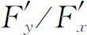
。于是赫尔曼说，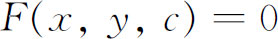
的正交轨线的常微分方程为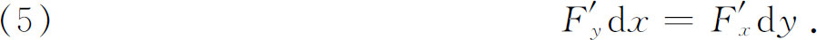
他从（5）解出c，把它代入原来的方程
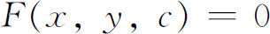
，并且解出最后得到的微分方程。这个方法实际上是莱布尼茨的，只不过赫尔曼阐述得更为明确而已。现在更习惯于找出F＝0所满足的真的微分方程，这方程不含c；在这个方程中再用-1/y′代替y′，这样就得到正交轨线的微分方程。约翰·伯努利向英国人提出了另外一些轨线的难题，他特别讨厌的是牛顿。由于英国人与大陆的伙伴已经不和，所以挑战是冷酷的并带有敌意。
约翰·伯努利后来解决了一个抛射体在阻力正比于速度任何次幂的介质中运动的问题，这里的微分方程是
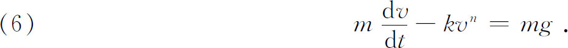
那时也认识了一阶恰当方程，即方程
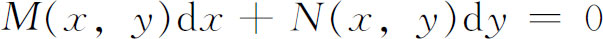
中的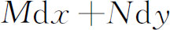
是某个函数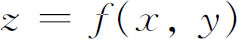
的恰当微分。克莱罗——他关于地球形状的著作是很有名的——已经在1739年与1740年（第19章第6节）的论文中给出方程是恰当的条件：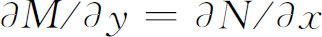
。这个条件也由欧拉独立地在1734年至1735年写的一篇论文中给出(11)。假如方程是恰当的，那么如克莱罗和欧拉所指出的那样，它是可以积分的。当一个一阶方程不是恰当时，往往可以将方程乘上一个叫做积分因子的量，使它化成恰当的。虽然积分因子在一阶常微分方程的特殊问题中早已采用了，但是领会到这个概念提供了一个方法的却是欧拉（在1734年或1735年的论文中），他确立了可采用积分因子的方程类属。他还证明如果知道了任何一阶常微分方程的两个积分因子，那么令它们的比等于常数，就是微分方程的一个积分。克莱罗在他1739年的文章中独立地引进了积分因子的概念，而且在1740年的论文中加上了理论。求解一阶方程的所有初等方法到1740年都已清楚了。